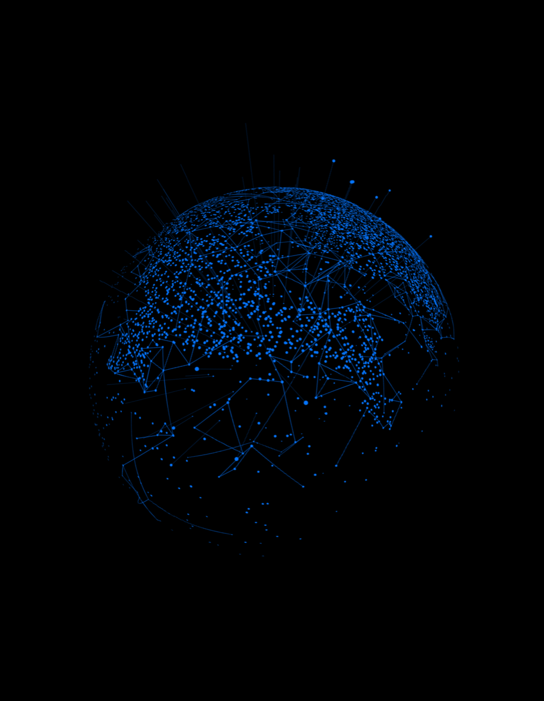

Side Project — Design Beyond Screens
Wearables as Design Artefacts
During hackathons, Pinnacle initiatives, and internal Studio events, I designed T-shirt concepts and visuals as intentional design artefacts — not just swag. Physical objects that reinforce shared identity, anchor culture, and extend design impact beyond pixels.
Translating Themes into Wearable Form
Hackathon T-shirts are usually afterthoughts — generic logos slapped on cotton. I treated them differently. Each design was an intentional artefact that translated abstract themes (AI, experimentation, speed, craft) into wearable form.
The design constraint was clear: balance bold expression with everyday usability. These had to be artefacts people choose to wear beyond the event — not just during it.

Reinforcing Shared Identity
Physical artefacts created during intense, time-boxed innovation became culture anchors — reinforcing team identity and shared purpose long after the hackathon ended.
Extended design thinking into the physical world. The same principles that guide screen-based UX — clarity, hierarchy, intentionality — applied to wearable objects.
“Design doesn’t stop at the screen edge. When you treat a T-shirt as a design artefact — not swag — it becomes a vehicle for shared identity, a culture anchor that people carry with them.”